The Hidden Lake Lookout Trail in Washington’s North Cascades is an
unforgettable 8-mile round trip with roughly 3,300 feet of elevation
gain, topping out near 6,900 feet. The route starts in a cool
forest, climbs through wildflower meadows, and opens onto rocky
alpine slopes where streams and snowfields linger early in the
season. Higher up, the trees give way to granite and wide-open views
before you reach the historic fire lookout above Hidden Lake. From
the summit, you can see jagged peaks like Sahale and Eldorado in
every direction. It is a tough climb, but the views make every step
worth it.
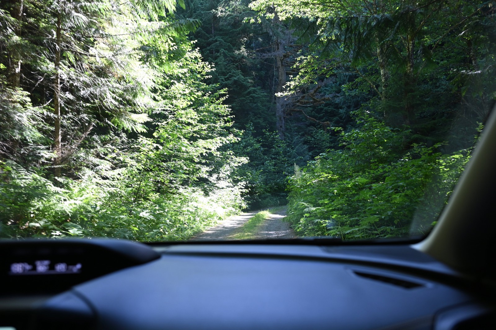
The rough road to the trailhead is narrow and single-lane, with
deep washouts that demand careful driving.
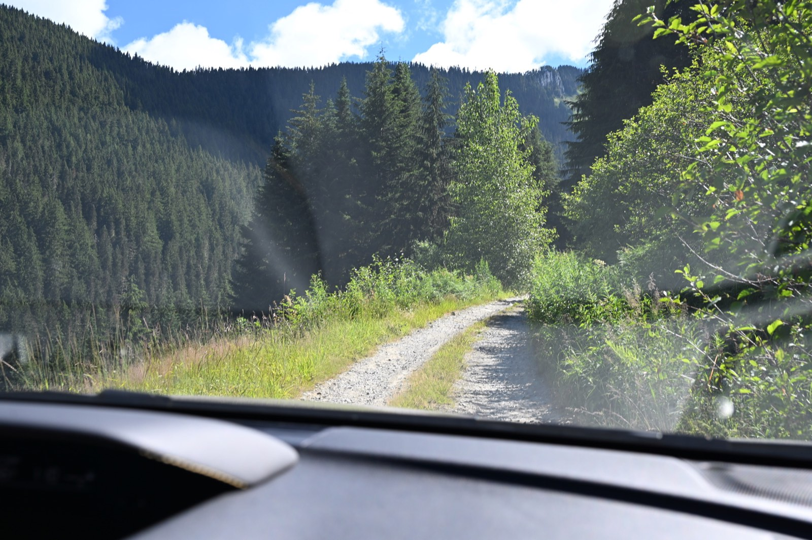
The upper sections of the trail are exposed and windswept.
The early views of the North Cascades are already breathtaking.
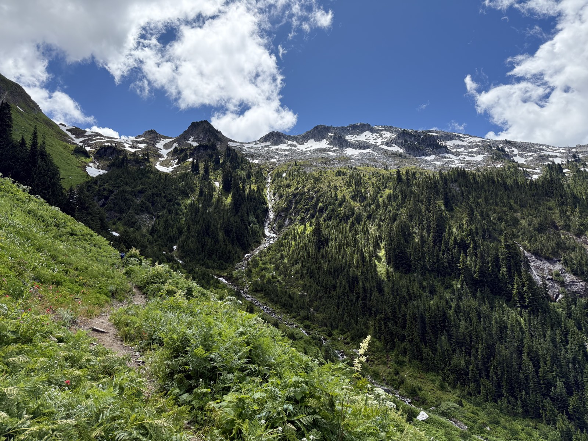
Lush greens blanket the lower slopes.
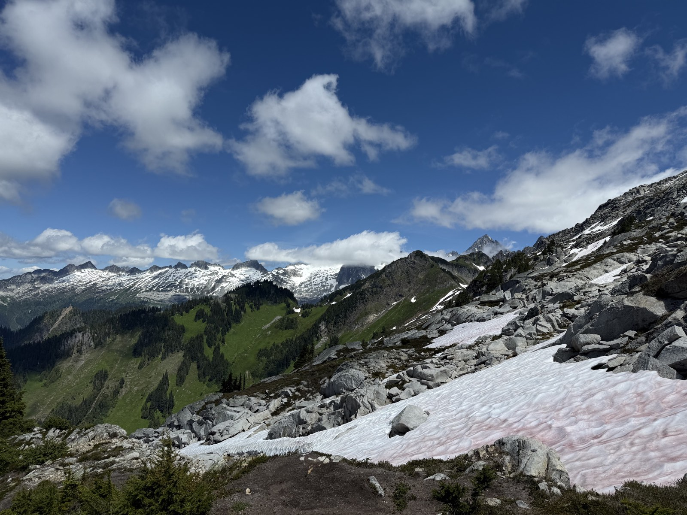
Patches of snow still linger on shaded ridges.
Meadows bursting with wildflowers.
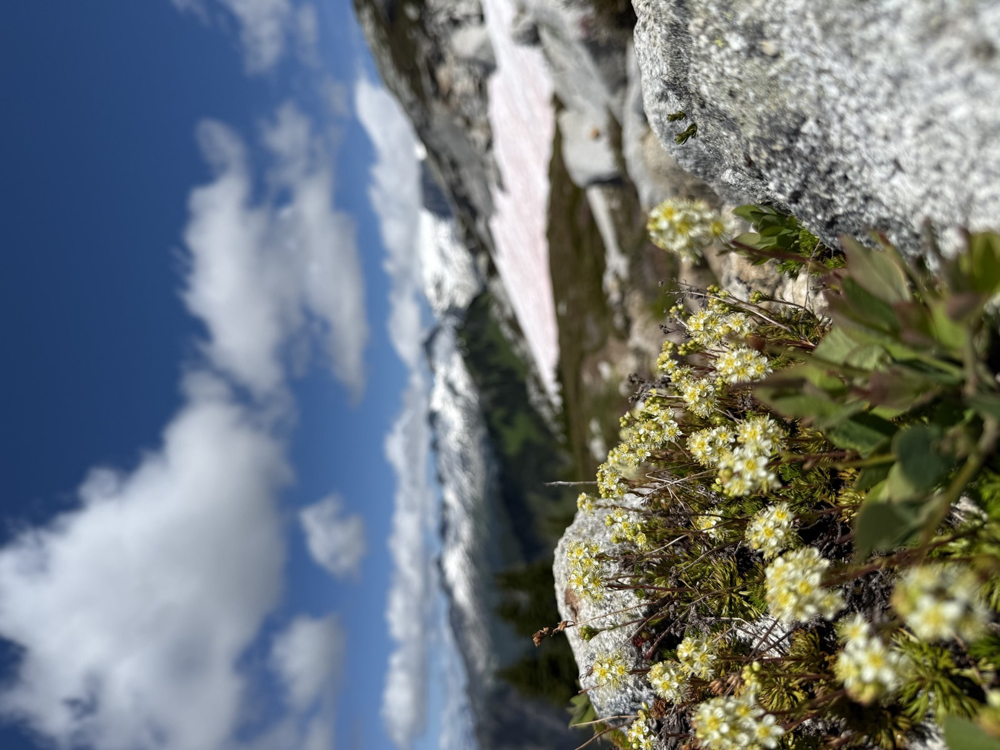
Alpine scenery that feels almost unreal.
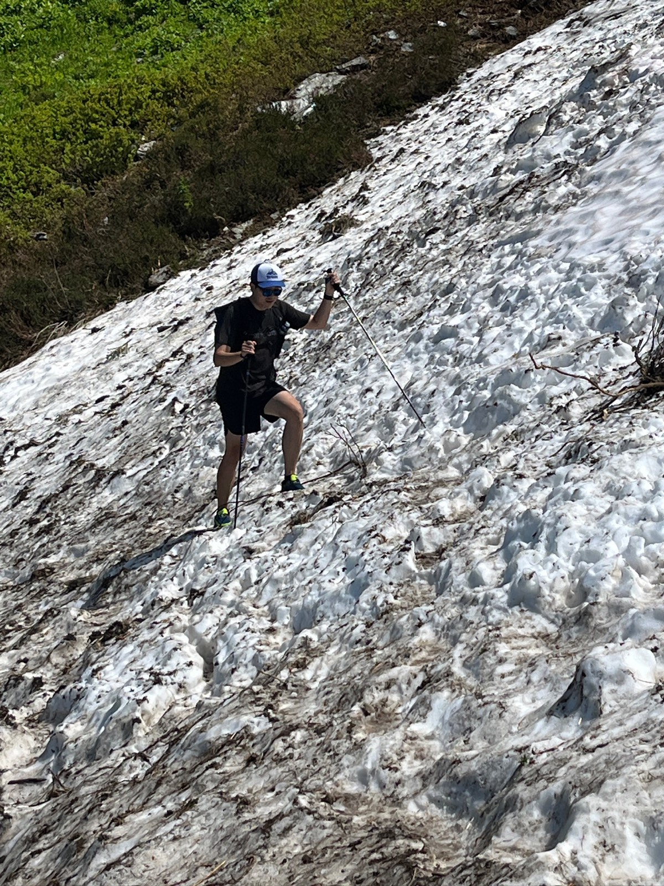
Early-season snowfields require careful crossing.
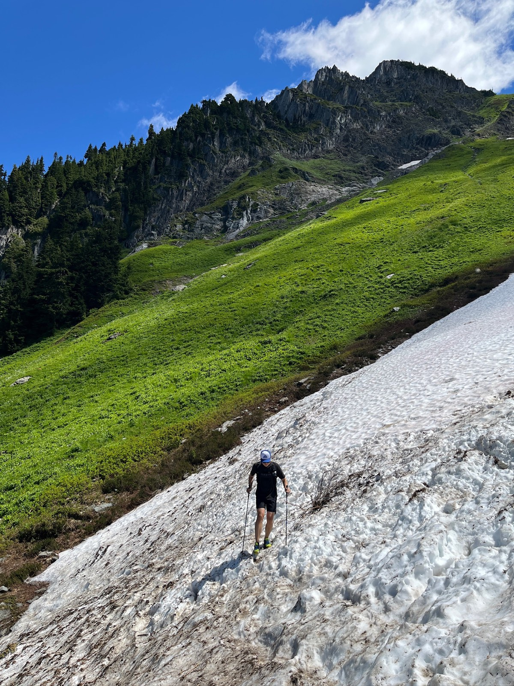
The Cascade Range stretches endlessly into the distance.
Refreshing glacier melt for a mid-hike water refill.
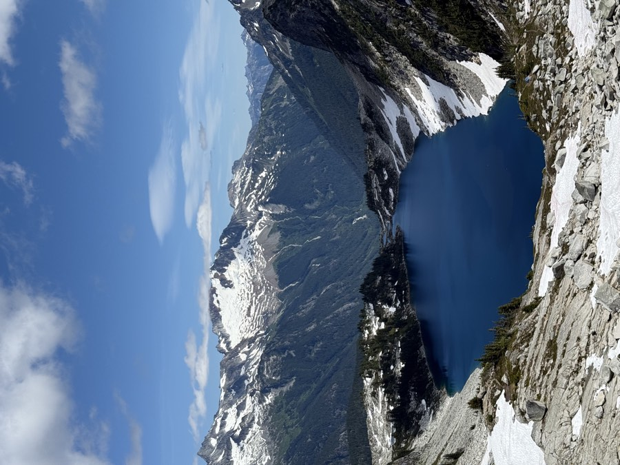
My first glimpse of Hidden Lake’s striking blue water.
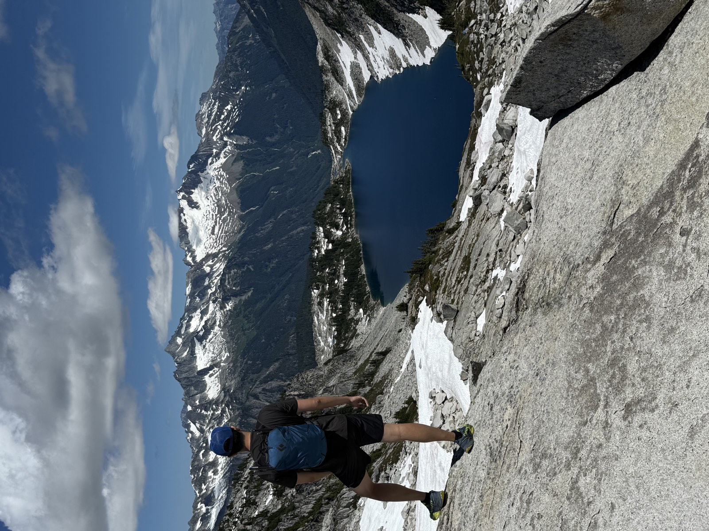
The deep sapphire color looks almost unreal.
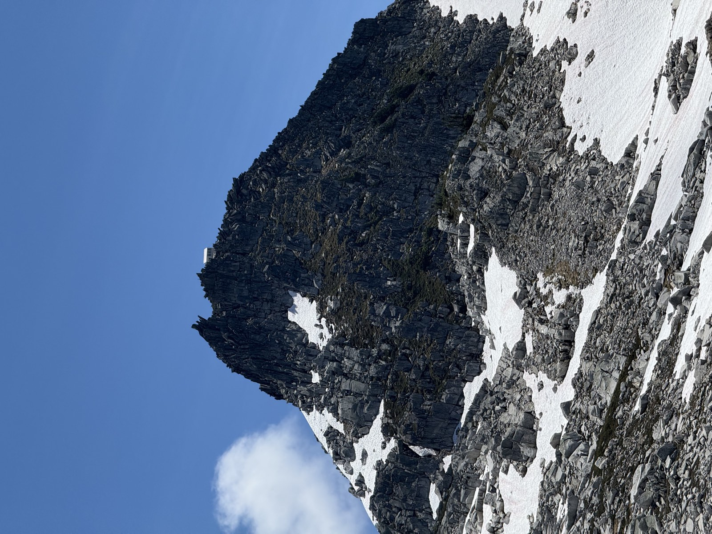
The fire lookout comes into view high on the ridge.
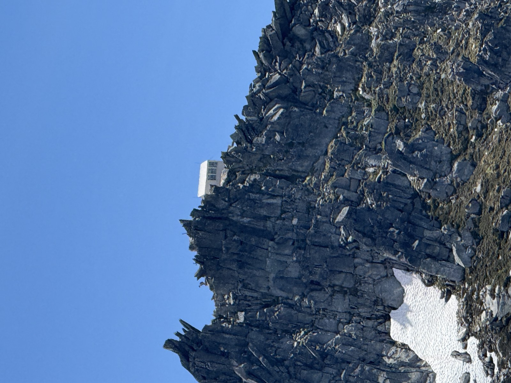
The final push to the summit.
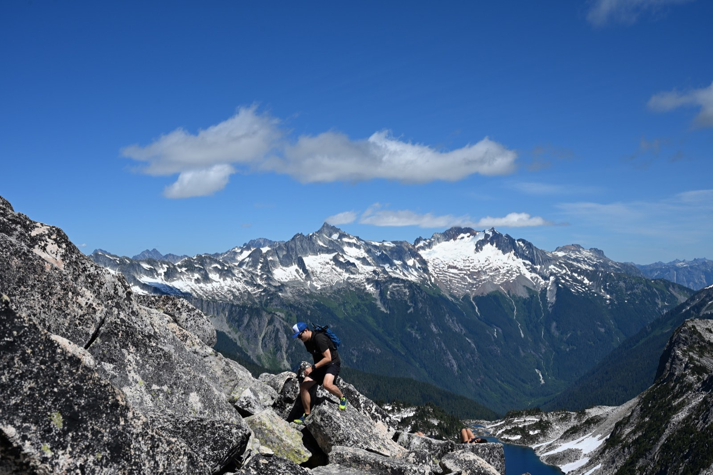
A short, fun scramble is required to reach the lookout.
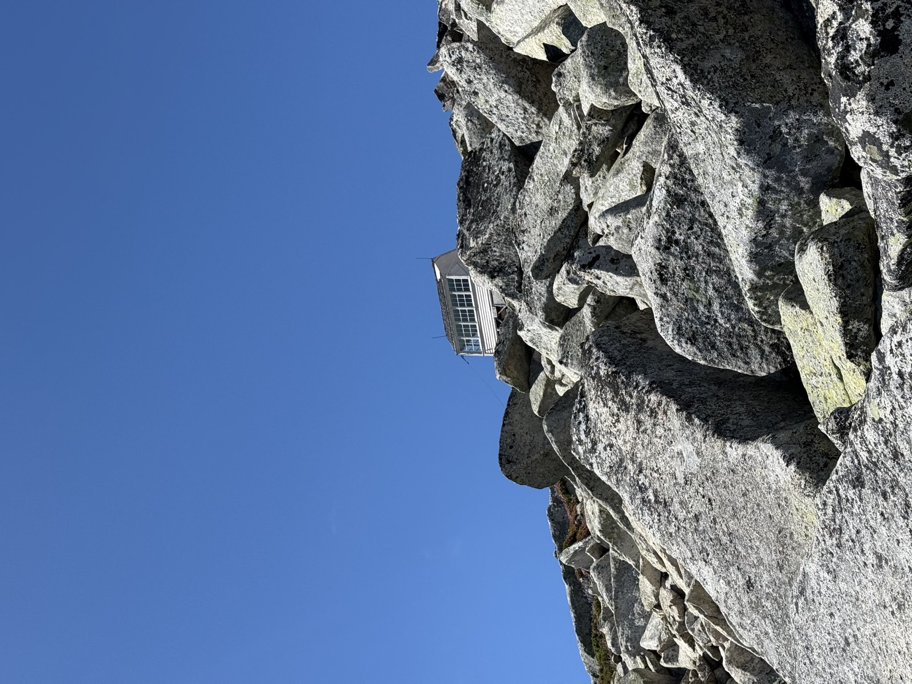
The historic fire lookout is now first-come, first-served for
overnight stays.
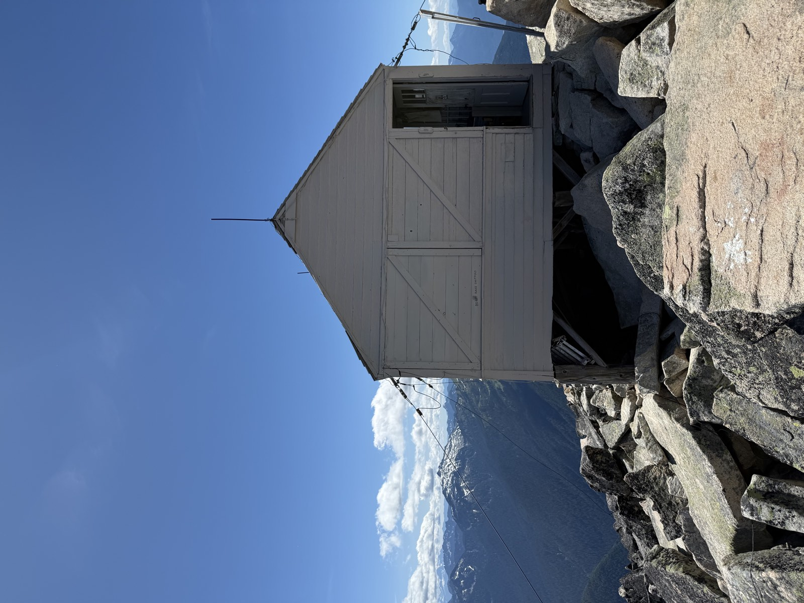
Standing at the lookout’s edge with endless views.